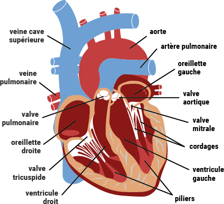

A la base de la vie, il y a les cellules. Des milliards de cellules qui respirent, consomment et produisent des déchets. Ensemble, elles forment nos tissus et nos organes : cœur, poumons, reins, foie, cerveau, muscles, etc. Et toutes ces « unités de vie », ont besoin de l’oxygène apporté par le sang pour vivre. Les muscles qui travaillent en sont de gros consommateurs. Le cœur, un muscle (myocarde) composé de cellules spécifiques (les cardiomyocytes) consomme, à lui seul, 10 % de tout l’oxygène fourni à l’organisme et ne pèse qu’environ 300 grammes chez un adulte. Les cellules du cœur présentent 2 particularités : elles sont capables de se contracter comme toutes les cellules musculaires, elles peuvent aussi conduire de l’électricité, ce qui déclenche la contraction.
Chaque battement compte.
La prévention commence par la connaissance du risque. Neuf personnes sur dix au pays présentent au moins un facteur de risque de maladie du cœur ou d'AVC. Près de 80 % des maladies du cœur et des AVC précoces peuvent être évités grâce à des comportements sains. Cela signifie que des habitudes comme manger sainement, être actif et vivre sans fumée ont une grande incidence sur votre santé.
Fonctionnement
Pour comprendre le fonctionnement du cœur et le protéger des maladies cardio-vasculaires, une petite leçon d'anatomie s'impose.
Maladies
Selon l'OMS,les maladies cardio-vasculaires sont la première cause de mortalité dans le monde: il meurt chaque année plus de personnes en raison de maladies cardio-vasculaires que de toute autre cause.
Prevention
De petits changements sains dans votre routine quotidienne peuvent diminuer le risque de maladie cardiaque.
Aide
Si vous avez besoin d'aide ou d'en savoir plus:
Fonctionnement de notre Coeur
Situé au sein du thorax, entre les 2 poumons, le cœur est un muscle creux de la grosseur d’un poing. Il est recouvert de 2 fines membranes protectrices : l’épicarde, l’enveloppe externe, l’endocarde, l’enveloppe interne. Le cœur a la forme grossière d’une pyramide renversée à trois faces. De sa base s’échappent 2 vaisseaux : l’artère pulmonaire, qui relie le cœur aux poumons, l’aorte, qui relie le cœur au reste du corps : organes nobles, viscères, muscles, tissus. Chacun de nous peut sentir battre la pointe du cœur entre deux côtes, du côté gauche, vers la partie basse du thorax. Le cœur repose, par une face inférieure, sur le diaphragme qui le sépare des viscères de l’abdomen. Muscle dénommé strié par les histologistes, il possède la même structure que ceux des membres avec la même force de contraction.
Vu en coupe, le cœur se compose de 4 cavités, couplées deux par deux, qui forment le cœur droit et le cœur gauche, soit 2 pompes juxtaposées et synchronisées. Chacun des deux cœurs est constitué d’une petite cavité, l’oreillette, ayant un rôle de réception du sang. Au gré des pressions, elle se contracte pour se vider dans un espace plus volumineux : le ventricule, qui éjecte le sang dans une artère.
Elle se fait à sens unique grâce aux 4 valves cardiaques qui, s’ouvrent et se ferment alternativement comme des clapets : 2 d’entre elles siègent entre les oreillettes et les ventricules (les valves mitrale et tricuspide). Les 2 autres sont situées entre les ventricules et l’artère correspondante (la valve aortique et la valve pulmonaire). Le cœur droit comprend l’oreillette droite, placée au dessus du ventricule droit. Entre les deux se trouve la valvule tricuspide (à trois feuillets). Le cœur droit assure la récupération du sang veineux, le sang bleu appauvri en oxygène et riche en oxyde de carbone, de retour des tissus et organes qu’il a nourris. Cette récupération s’effectue grâce à 2 vaisseaux raccordés à l’oreillette : la veine cave inférieure, venant de la partie du corps située au dessous du cœur, la veine cave supérieure, venant de la partie du corps située au dessus. De l’oreillette droite, le sang bleu passe dans le ventricule à travers la valvule tricuspide ouverte, avant d’être propulsé dans l’artère pulmonaire, via la valvule pulmonaire, en direction des poumons où il s’oxygène et élimine le gaz carbonique. C’est dans la paroi de l’oreillette droite, qu’un amas de cellules nerveuses, appelé nœud sinusal, est à l’origine des impulsions électriques qui déclenchent à intervalles réguliers la contraction cardiaque. Le cœur gauche est constitué par l’oreillette gauche qui surmonte le ventricule gauche. Entre les deux se situe la valvule mitrale (en forme de mitre d’évêque renversée). Le cœur gauche propulse le sang dans tout l’organisme grâce à l’aorte, artère maîtresse qui naît du ventricule gauche. En amont, le sang rouge, revenu des poumons où il s’est oxygéné, se déverse dans l’oreillette gauche en empruntant les veines pulmonaires, avant de passer dans le ventricule gauche à travers la valvule mitrale ouverte. Il est finalement éjecté par le ventricule dans l’aorte, qu’il atteint après avoir franchi la valvule aortique.
Maladies cardiovasculaires
Les maladies cardiovasculaires constituent un ensemble de troubles affectant le cœur et les vaisseaux sanguins, qui comprend:
- les cardiopathies coronariennes (touchant les vaisseaux sanguins qui alimentent le muscle cardiaque)
- les maladies cérébro-vasculaires (touchant les vaisseaux sanguins qui alimentent le cerveau)
- les artériopathies périphériques (touchant les vaisseaux sanguins qui alimentent les bras et les jambes)
- les cardiopathies rhumatismales, affectant le muscle et les valves cardiaques et résultant d’un rhumatisme articulaire aigu, causé par une bactérie streptocoque
- les malformations cardiaques congénitales (malformations de la structure du cœur déjà présentes à la naissance)
- les thromboses veineuses profondes et les embolies pulmonaires (obstruction des veines des jambes par un caillot sanguin, susceptible de se libérer et de migrer vers le cœur ou les poumons).
Les infarctus et les accidents vasculaires cérébraux sont généralement des événements aigus et sont principalement dus au blocage d’une artère empêchant le sang de parvenir au cœur ou au cerveau. Leur cause la plus courante est la constitution d’un dépôt gras sur les parois internes des vaisseaux sanguins alimentant ces organes. Les accidents vasculaires cérébraux peuvent aussi résulter du saignement d’un vaisseau sanguin cérébral ou de caillots. Les infarctus et les AVC sont généralement dus à la présence de plusieurs facteurs de risque associés comme le tabagisme, une mauvaise alimentation et l’obésité, la sédentarité et l’utilisation nocive de l’alcool, l’hypertension, le diabète et l’hyperlipidémie.
"On estime à 17,7 millions le nombre de décès imputables aux
maladies cardio-vasculaires,
soit 31% de la mortalité mondiale totale"
" Les personnes exposées à un risque élevé de maladies cardiovasculaires nécessitent une détection précoce et une prise en charge comprenant soutien psychologique et médicaments, selon les besoins."
Les principaux facteurs de risques des cardiopathies et des AVC, sont une mauvaise alimentation, un manque d’activité physique, le tabagisme et l'usage nocif de l’alcool. Les effets des facteurs de risque comportementaux peuvent se traduire chez les personnes par une hypertension, une hyperglycémie, une hyperlipidémie, le surpoids et l’obésité. Ces «facteurs de risque intermédiaires» peuvent être évalués dans les établissements de soins de santé primaires et ils sont le signe d’un risque accru d’infarctus, d’accident vasculaire cérébral, de défaillance cardiaque et d’autres complications. On a constaté que cesser de fumer, réduire l’apport en sel dans son alimentation, consommer des fruits et des légumes, pratiquer une activité physique régulière et éviter l’usage nocif de l’alcool permettaient de réduire le risque de maladie cardiovasculaire. En outre, le traitement médicamenteux du diabète, de l’hypertension et de l’hyperlipidémie peut s’avérer nécessaire pour diminuer le risque cardiovasculaire et prévenir les infarctus et les AVC. Les politiques de santé, qui créent des conditions propices pour qu’il soit à la fois abordable et possible de faire les bons choix en matière de santé, sont essentielles pour inciter les populations à adopter un comportement sain et à s’y tenir. Il existe aussi un certain nombre de déterminants sous-jacents des maladies cardiovasculaires. Ils proviennent des principales évolutions sociales, économiques et culturelles - la mondialisation, l'urbanisation et le vieillissement de la population. D'autres déterminants des maladies cardiovasculaires sont la pauvreté, le stress et les facteurs héréditaires.
Symptômes des infarctus et AVC
Il est fréquent qu’une maladie cardiovasculaire touchant les vaisseaux sanguins ne donne aucun symptôme. Un infarctus ou un AVC sont parfois le premier signe de la maladie sous-jacente. Un infarctus peut provoquer notamment les symptômes suivants:
- douleur ou gêne dans la partie centrale de la poitrine;
- douleur ou gêne au niveau des bras, de l’épaule gauche, des coudes, de la mâchoire ou du dos.
En outre, la personne peut ressentir des difficultés à respirer ou un essoufflement, éprouver un malaise ou vomir, avoir des sensations vertigineuses ou s’évanouir, être prise de sueurs froides ou pâlir. La probabilité de ressentir des difficultés respiratoires ou des nausées, de vomir ou encore d’éprouver une douleur à la mâchoire ou au dos, est plus forte pour les femmes. Le symptôme le plus courant d’un AVC est une sensation de faiblesse soudaine au niveau de la face, du bras ou de la jambe, le plus souvent sur un seul côté du corps. Un AVC peut aussi provoquer l’apparition brutale des symptômes suivants: engourdissement de la face, du bras ou des jambes, en particulier d’un seul côté du corps; confusion, difficultés à parler ou à comprendre un discours; difficultés visuelles touchant un œil ou les deux; difficultés à marcher, étourdissement, perte d’équilibre ou de coordination; céphalées sévères sans cause connue et syncope ou perte de conscience. Les personnes présentant ces symptômes doivent consulter immédiatement.
"Sur 17,7 millions de décès,6,7 millions sont dus à un AVC"
"Près de 33 millions de personnes seraient actuellement touchées par la cardiopathie rhumatismale."
Une cardiopathie rhumatismale est une atteinte des valves et du muscle cardiaques résultant de l’inflammation et des lésions cicatricielles laissées par un rhumatisme articulaire aigu. Le rhumatisme articulaire aigu est provoqué par une réponse anormale de l’organisme à une infection causée par une bactérie streptocoque et commence habituellement par une angine ou une amygdalite chez l’enfant. Le rhumatisme articulaire aigu touche surtout les enfants des pays en développement, en particulier dans les situations de pauvreté généralisée. Au niveau mondial, près de 2% des décès par maladies cardiovasculaires sont liés au rhumatisme articulaire aigu.
Symptômes d'une cardiopathie rhumatismale
- essoufflement, fatigue, arythmie cardiaque, douleur thoracique et syncope pour une cardiopathie rhumatismale;
- fièvre, douleur et gonflement au niveau des articulations, nausées, crampes stomacales et vomissements pour un rhumatisme articulaire aigu.
Plus des trois quarts des décès par maladie cardiovasculaire
dans le monde surviennent dans des pays à revenu faible ou
intermédiaire.
Les habitants des pays à revenu faible ou intermédiaire ne
peuvent souvent pas bénéficier des programmes intégrés de
soins de santé primaires pour la détection précoce et le
traitement des personnes à risque par rapport aux habitants
des pays à revenu élevé.
De ce fait, ils meurent plus jeunes de maladies
cardiovasculaires ou d'autres maladies non transmissibles,
souvent dans leurs années les plus productives.
Les habitants les plus pauvres des pays à revenu faible ou
intermédiaire sont les plus touchés. Il est amplement démontré
que les maladies cardiovasculaires et d'autres maladies non
transmissibles contribuent à la pauvreté des ménages du fait
des dépenses de santé catastrophiques et du niveau élevé des
paiements directs auxquels ceux-ci doivent faire face.
Au niveau macroéconomique, les maladies cardiovasculaires
prélèvent un lourd tribut sur les économies des pays à revenu
faible ou intermédiaire.
"Plus des trois quarts des décès liés aux maladies
cardiovasculaires interviennent
dans des pays à revenu faible ou intermédiaire."
Prevention
Il y a plusieurs facteurs qui augmentent le risque de maladie cardiaque:
-
Les facteurs de risque liés au mode de vie:
Alimentation malsaine,le manque d'exercice,Un mauvais poids(IMC),le tabagisme,le stress,l'alcool et les drogues recreatives ont tous un effet néfaste sur notre système cardiaque voir même sur d'autres organes de notre corps. -
Certains problèmes de santé:
Hypertension artérielle;Taux élevé de cholestérol;Diabète;Fibrillation auriculaire;Déficit cognitif d'origine vasculaire. -
Facteurs incontrolables(car bénins):
- Sexe:Les femmes on plus de risque que les hommes(à cause de la ménopause;oestrogène,...
- Âge: Le rsique de maladies cardiovasculaires augmente avec l'âge.
- Antécédents familiaux et médicaux:Votre risque est plus élevé si l'un de vos proches parents a déjà été atteint d'une maladie du coeur à un jeune âge.
- Origines africaine et sud-asiatique:Les personnes d'origine africaine ou sud-asiatique sont plus susceptibles d'avoir une pression artérielle élevée, le diabète et d'autres facteurs de risque.
- Origine autochtone:Les membres des Premières Nations, les Inuits et les Métis souffrent plus fréquemment d'hypertension artérielle et de diabète. Cela se traduit par un risque de maladies du cœur supérieur à celui de la population générale.
- Situation personnelle:Votre situation personnelle et les facteurs environnementaux ont une influence sur votre santé. Ce sont des conditions comme l'accessibilité à des aliments sains, à de l'eau potable, à des soins de santé et à des services sociaux.
.Vous pouvez limiter voir baisser le risque d'avoir ces maladies en adoptant certaines habitudes simples et saines:
Mangez sainement.
Une alimentation saine, c'est-à-dire un régime alimentaire équilibré, est l'une des manières les plus efficaces de protéger votre santé.
Garder la forme.
Pour conserver la santé du cœur, un peu d'activité physique est très bénéfique. Voici des conseils pour bouger.
Réduire le stress
La gestion du stress vous aidera à vous sentir mieux au quotidien et à diminuer vos risques de maladie cardiovasculaire.
Poids santé
Adopter de saines habitudes et un poids santé – pour la vie.
Si vous voulez en savoir plus ou que vous voulez consulter un
spécialiste,veuillez nous contacter.
Vous pouvez également faire un don en cliquant sur le bouton
spécifié.
Donner en ligne
Merci infiniment pour votre don!
grace à vous,des operations du coeur pour personnes ayant des revenus faibles ou vivant dans des pays pauvres comme le Liban pourront etre financés
votre geste nous fait chaud au